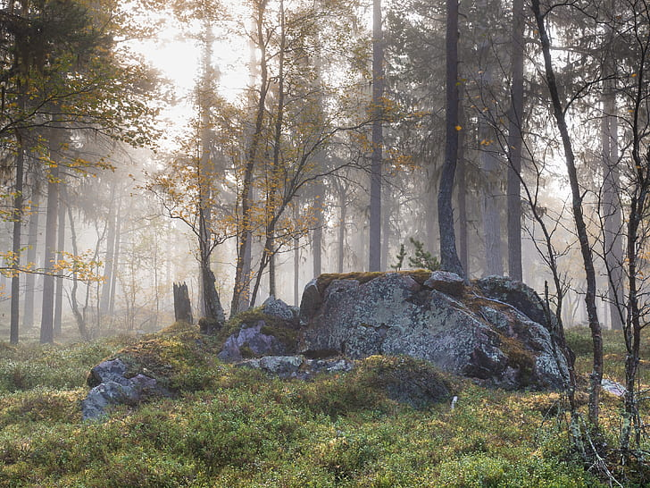

Sweden: A Nation Embraced by Two-Thirds Forest
Sweden, a nation characterized by its breathtaking natural beauty, boasts an astounding statistic: two-thirds of its landmass is enveloped in lush, verdant forests. This staggering expanse of woodland is a testament to Sweden's deep-rooted commitment to environmental conservation and sustainable forestry practices. These vast woodlands not only contribute to Sweden's rich biodiversity but also serve as a source of pride for its citizens, encapsulating the harmonious coexistence of nature and modernity that defines this remarkable Scandinavian nation.